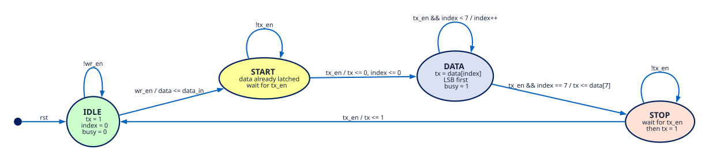
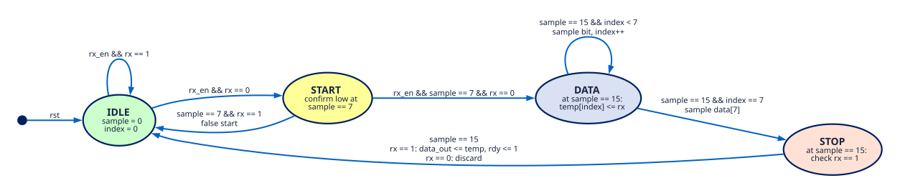
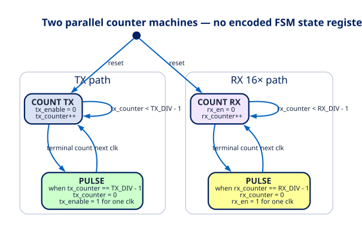
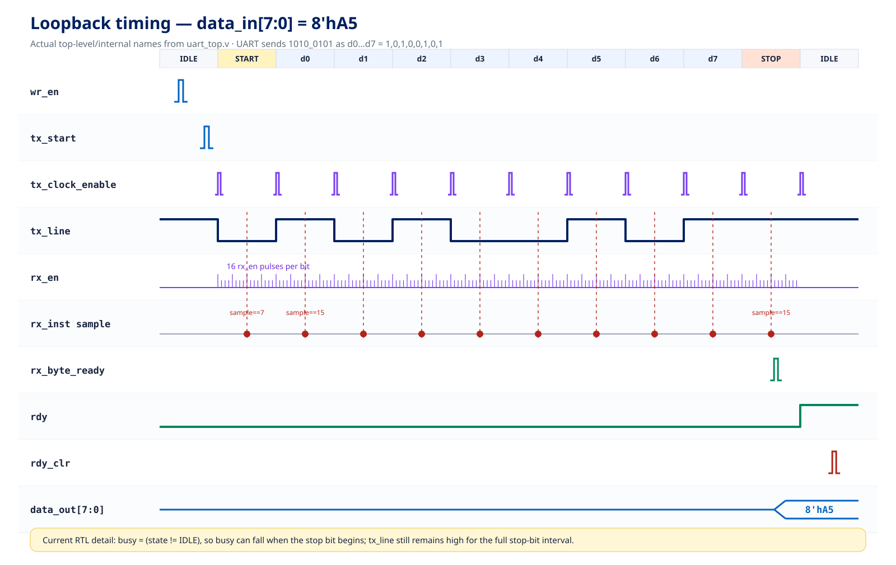

The frame logic is correct; the interface is not production-complete.
The current self-checking testbench passes all 12 cases. The line is idle-high, sends one low start bit, eight data bits LSB-first, and one high stop bit. Receiver alignment and midpoint sampling are correct for the implemented 16× enable.
Sender FSM
wr_en latches data_in; every serialized phase change is gated by tx_en (connected to tx_clock_enable in the top level).

Receiver FSM
The handwritten sketch’s start-to-data label is corrected here: the start bit is checked at sample == 7. Each data bit and the stop bit are then sampled at sample == 15.

Baud-rate generator flow
The BRG is not an encoded FSM. It is two independent counters that emit one-system-clock enable pulses: tx_enable once per UART bit and rx_en at the receiver oversampling cadence.

Signal timing, styled after the notebook sketch
Example byte 8'hA5. Red markers show the receiver decision points; the line carries d0 first. The page uses internal top-level names such as tx_start, tx_clock_enable, tx_line, rx_en, and rx_byte_ready.

Check against conventional UART 8-N-1 behavior
| Result | Item | Finding |
|---|---|---|
| PASS | Frame polarity and order | tx/tx_line is idle-high, start-low, sends data[0] through data[7], then drives a high stop bit. |
| PASS | Receiver timing | The start bit is rechecked halfway through its cell and later bits are sampled one bit-period apart. That matches the common 16× midpoint method. |
| ATTENTION | Top-level interface | uart_top loops tx_line directly into rx_inst.rx; it has no external rx input or tx output, so it is not yet a physical UART top level. |
| ATTENTION | Asynchronous RX safety | There is no two-flop synchronizer before the receiver. The loopback is same-clock, but an external RX pin would need synchronization to reduce metastability risk. |
| ATTENTION | Noise and errors | The receiver takes one sample per bit and silently discards a low stop bit. Production UARTs commonly expose framing/overrun status; many use majority voting around the midpoint. |
| ATTENTION | busy meaning | Because busy = (state != IDLE) and STOP transitions to IDLE when the stop level is launched, busy can fall at the beginning of the stop bit rather than after its full duration. |
| ATTENTION | Divider parameter widths | tx_counter[12:0] and rx_counter[9:0] fit 5208 and 325, but wider divider parameters would overflow. Deriving widths with $clog2 would make the parameters safe. |
| ATTENTION | FIFO overflow visibility | The TX FIFO full output is unused and the RX full condition has no exported overflow flag. Data can be dropped without the user interface reporting it. |